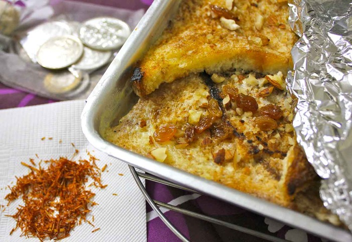

Double Ka Meeta

Description
The Hyderabadi Double Ka Meetha is a traditional Hyderabadi dessert prepared with bread, which derives its name from ‘Double Roti’, a term used for bread during the British era. This Indian version of bread pudding showcases the deliciousness of bread when it absorbs the richness of milk and cream and is flavoured with dry fruits and spices.
Ingredients
- 10 Whole Wheat Brown Bread
- 1/2 liter Milk
- 1/2 cup Fresh cream
- Ingredients For the sugar syrup
- 1 cup Water
- 1 cup Sugar
- 2 tablespoons Rose water
- 8 Whole Almonds (Badam) , blanched and sliced
- 2 tablespoons Sultana Raisins
- 1 tablespoon Ghee , or oil, for frying bread slices
Steps
- To begin making the Hyderabadi Double Ka Meetha Recipe we will start by boiling sugar with the water to make the sugar syrup.
- Stir continuously, till tiny little bubbles are seen on the surface of the liquid. This indicates that the syrup is ready. Once done, keep it aside, allowing it to cool down.
- In the next step, boil milk with the cream in a deep bottom pan on medium heat. We need to condense the milk until it becomes half its quantity and the milk is thick and creamy.
- Make sure you keep stirring the milk occasionally else it will stick to the bottom of the pan and can get burnt. Once the milk is condensed, turn off the heat.
- Take the bread and cut each slice diagonally into two.
- Heat oil in a skillet and shallow fry the bread slices, turning them occasionally until they turn golden brown on both sides. Once done, turn off the flame and allow them to cool.
- To prepare the Hyderabadi Double Ka Meetha Recipe, preheat the oven to 180 C. Take a rectangular baking tray and grease it evenly with ghee or oil.
- Arrange the bread slices in the baking tray in such a way, so that the entire tray is filled. Pour in the milk/cream mixture, rose water and sugar syrup over the bread slices evenly.
- Keep this aside for about five minutes, so that the bread slices can soak in all the liquids.
- Sprinkle the almonds and raisins on top of the bread and cover the pan with aluminium foil.
- Bake the Double Ka Meetha in the preheated oven for about 25 to 30 minutes, or until the liquids are almost dried up and thicked. Allow the bread pudding to rest once done, without removing the seal.
- Your tasty and delectable Double Ka Meetha is ready to eaten as a wonderful dessert option after a meal